전기공사산업기사 (2016-10-01 기출문제)
1과목: 전기응용
1. 자동제어의 추치 제어에 속하지 않는 것은?
- 추종 제어
- 비율 제어
- 프로그램 제어
- 프로세스 제어
(정답률: 62%)

2. 유전가열의 특징으로 틀린 것은?
- 표면의 소손, 균열이 없다.
- 온도 상승 속도가 빠르고 속도가 임의 제어된다.
- 반도체의 정련, 단결정의 제조 등 특수 열처리가 가능하다.
- 열이 유전체손에 의하여 피열물 자신에게 발생하므로 가열이 균일하다.
(정답률: 59%)
3. 정전압 소자로 사용되는 다이오드는?
- 제너 다이오드
- 터널 다이오드
- 포토 다이오드
- 발광 다이오드
(정답률: 86%)
4. 용접의 종류 중에서 저항용접이 아닌 것은?
- 점 용접
- 심 용접
- TIG 용접
- 프로젝션 용접
(정답률: 69%)
5. 곡선 궤도에 있어 캔트(cant)를 두는 주된 이유는?
- 시설이 곤란하기 때문에
- 운전 속도를 제한하기 위하여
- 운전의 안전을 확보하기 위하여
- 타고 있는 사람의 기분을 좋게 하기 위하여
(정답률: 84%)
6. 유도 전동기의 비례추이 특성을 이용한 기동 방법은?
- 전전압 기동
- Y-△ 기동
- 리액터 기동
- 2차 저항 기동
(정답률: 72%)
7. 도체에 고주파 전류가 흐르면 도체 표면에 전류가 집중하는 현상이며 금속의 표면 열처리에 이용되는 것은?
- 핀치 효과
- 제벡 효과
- 톰슨 효과
- 표피 효과
(정답률: 79%)
8. 납축전지에 대한 설명 중 틀린 것은?
- 공칭전압은 1.2[V]이다.
- 전해액으로 묽은 황산을 사용한다.
- 주요 구성부분은 극판, 격리판, 전해액, 케이스로 이루어져 있다.
- 양극은 이산화납을 극판에 입힌 것이고, 음극은 해면 모양의 납이다.
(정답률: 76%)
9. 다이액(DIAC)에 대한 설명 중 틀린 것은?
- 과전압 보호회로에 사용되기도 한다.
- 역저지 4극 사이리스터로 되어 있다.
- 쌍방향으로 대칭적인 부성저항을 나타낸다.
- 콘덴서 방전전류에 의하여 트라이액을 ON 시킬 수 있다.
(정답률: 67%)
10. 빛을 아래쪽에 확산, 복사시키며 눈부심을 적게 하는 조명 기구는?
- 루버
- 글로브
- 반사볼
- 투광기
(정답률: 66%)
11. 옥내 전반 조명에서 바닥면의 조도를 균일하게 하기 위한 등간격은? (단, 등간격 S, 등높이 H이다.)
- S=H
- S≤2H
- S≤0.5H
- S≤1.5H
(정답률: 77%)
12. 반경 3[cm], 두께 1[cm]의 강판을 유도가열에 의하여 3초 동안에 20[℃]에서 700[℃]로 상승시키기 위해 필요한 전력은 약 몇 [kW]인가?(단, 강판의 비중은 7.85[ton/m3], 비열은 0.16[kcal/kg・℃]이다.)
- 3.37
- 33.7
- 6.67
- 66.7
(정답률: 44%)
13. 망간 건전지에서 분극작용에 의한 전압강하를 방지하기 위하여 사용되는 감극제는?
- O2
- HgO
- MnO2
- H2Cr2O7
(정답률: 82%)
14. 금속의 전기저항이 온도에 의하여 변화하는 것을 이용한 온도계는?
- 광 고온계
- 저항 온도계
- 방사 고온계
- 열전 온도계
(정답률: 61%)
15. 블록 선도에서 C/R는 얼마인가?
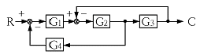
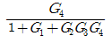
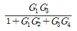
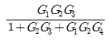
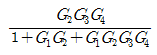
(정답률: 75%)
16. 형광등은 주위온도가 약 몇 [℃]일 때 가장 효율이 높은가?
- 5~10
- 10~15
- 20~25
- 35~40
(정답률: 83%)
17. 납축전지가 충분히 방전했을 때 양극판의 빛깔은 무슨 색인가?
- 청색
- 황색
- 적갈색
- 회백색
(정답률: 73%)
18. 투명 네온관등에 네온가스를 봉입하였을 때 광색은?
- 등색
- 황갈색
- 고동색
- 등적색
(정답률: 60%)
19. 전기회로의 전류는 열회로의 무엇에 대응하는가?
- 열류
- 열량
- 열용량
- 열저항
(정답률: 80%)
20. 열차가 주행할 때 중력에 의하여 발생하는 저항으로 두 점 간의 수평거리와 고저 차의 비로 표시되는 저항은?
- 출발저항
- 구배저항
- 곡선저항
- 주행저항
(정답률: 78%)
2과목: 전력공학
21. 복도체 또는 다도체에 대한 설명으로 틀린 것은?
- 복도체는 3상 송전선의 1상의 전선을 2본으로 분할한 것이다.
- 2본 이상으로 분할된 도체를 일반적으로 다도체라 한다.
- 복도체 또는 다도체를 사용하는 주 목적은 코로나 방지에 있다.
- 복도체의 선로정수는 같은 단면적의 단도체 선로와 비교할 때 변함이 없다.
(정답률: 54%)
22. 화력 발전소의 보일러 손실이 보일러 입력의 20[%]이고, 터빈 출력이 터빈 입력의 50[%]일 때, 화력발전소의 열소비율은 몇 [kcal/kWh]인가?
- 1850
- 1950
- 2⑤0
- 2150
(정답률: 19%)
23. 3상 1회선 전선로의 작용 정전용량을 C선간 정전용량을 C1대지 정전용량을 C2라 할 때 C, C1, C2의 관계는?
- C=C1+3C2
- C=3C1+C2
- C=C1+C2
- C=3(C1+C2)
(정답률: 47%)
24. 일반적으로 송전선로의 중성점을 직접접지 하는 목적으로 틀린 것은?
- 단절연 가능
- 과도 안정도의 증진
- 이상전압 발생의 억제
- 보호 계전기의 신속, 확실한 작동
(정답률: 46%)
25. 어떤 발전소에서 발열량 5500[kcal/kg]의 석탄 12[ton]을 사용하여 25000[kWh]의 전력을 발생하였을 경우 이 발전소의 열효율은 약 몇 [%]인가?
- 22.5
- 32.6
- 34.4
- 35.3
(정답률: 40%)
26. 차단기에서 “O-t1-CO-t2”의 표기로 나타내는 것은? (단, O는 차단동작t1, t2는 시간 간격, C는 투입 동작, CO는 투입 직후 차단 동작이다.)
- 차단기 동작 책무
- 차단기 속류 주기
- 차단기 재폐로 계수
- 차단기 무전압 시간
(정답률: 58%)
27. 66[kV], 60[Hz] 3상 3선식의 선로에서 중성점을 소호리액터 접지하여 완전 공진상태로 되었을 때 중성점에 흐르는 전류는 몇 [A]인가? (단, 소호리액터를 포함한 영상 회로의 등가 저항은 200[Ω], 중성점 잔류 전압은 4400[V]라고 한다.)
- 11
- 22
- 33
- 44
(정답률: 45%)
28. 전력 계통에서 전력용 콘덴서와 직렬로 연결하는 직렬 리액터는 어떤 고조파를 제거하는가?
- 제 5고조파
- 제 4고조파
- 제 3고조파
- 제 2고조파
(정답률: 62%)
29. 발전기의 회전수가 높을 때의 설명으로 옳은 것은?
- 원심력이 작아진다.
- 수소 냉각이 공기 냉각식보다 유리하다.
- 극수가 많아져서 권선간의 절연이 쉽게 된다.
- 축장이 짧아져서 공기의 순환이 원활하게 이루어진다.
(정답률: 43%)
30. 선로의 인덕턴스에 대한 설명으로 옳은 것은?
- 선로의 도체간 거리가 클수록 인덕턴스의 값이 작아진다.
- 선로 도체의 반지름이 클수록 인덕턴스의 값이 커진다.
- 일반적으로 지중 케이블은 가공 선로에 비해 인덕턴스의 값이 작다.
- 인덕턴스의 값은 선로의 기하학적 배치와는 전혀 무관하다.
(정답률: 35%)
31. 한류 리액터의 사용 목적은?
- 단락 전류의 제한
- 충전 전류의 제한
- 누설 전류의 제한
- 접지 전류의 제한
(정답률: 51%)
32. 플리커 예방을 위한 수용가 측의 대책이 아닌 것은?
- 공급 전압을 승압한다.
- 전압 강하를 보상한다.
- 전원 계통에 리액터분을 보상한다.
- 부하의 무효전력 변동분을 흡수한다.
(정답률: 44%)
33. 배전 손로의 전기 방식 중 전선의 중량(전선비용)이 가장 적게 소요되는 전기 방식은? (단, 상전압, 거리, 전력 및 선로손실 등은 같다.)
- 단상 2선식
- 3상 3선식
- 단상 3선식
- 3상 4선식
(정답률: 52%)
34. 동일한 전압에서 동일한 전력을 송전할 때 역률을 0.8에서 0.9로 개선하면 전력손실은 약 몇[%] 감소하는가?
- 5
- 10
- 21
- 40
(정답률: 41%)
35. 변류기를 개방할 때 2차측을 단락하는 이유는?
- 1차측 과전류 보호
- 1차측 과전압 방지
- 2차측 과전류 보호
- 2차측 절연 보호
(정답률: 61%)
36. 배전용 주상변압기의 2차측 접지보호의 목적은?
- 1차측 과부하 보호
- 2차 회로의 단락 보호
- 2차측 접지의 확산 방지
- 1차측과 2차측의 혼촉에 대한 보호
(정답률: 45%)
37. 그림과 같은 수전단 전력원선도가 있다. 부하 직선을 참고하여 전압조정을 위한 조상설비가 없어도 정전압 운전이 가능한 부하전력은 대략 어느정도일 때인가?
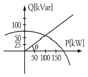
- 무부하일 때
- 50[kW]일 때
- 100[kW]일 때
- 150[kW]일 때
(정답률: 47%)
38. 22.9[kV]로 수전하는 자가용 전기 설비가 있다. 수전점에 설치한 차단기의 차단용량이 520[MVA]일 때 차단기의 정격차단 전류는 약 몇 [kA]인가?
- 3.5
- 5.5
- 8.5
- 12.5
(정답률: 37%)
39. 지상 높이 h[m]인 곳에 수평하중 P[kg]을 받는 전주에 지선을 설치할 때 지선 l[m]이 받는 장력은 몇 [kg]인가?
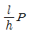
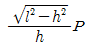
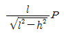
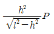
(정답률: 34%)
40. △결선의 3상 3선식 배전선로가 있다. 1선이 지락하는 경우 건전상의 전위 상승은 지락전의 몇 배인가?
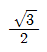
- 1
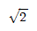
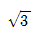
(정답률: 51%)
3과목: 전기기기
41. 1차 전압 3450[V], 권수비 30의 단상 변압기가 전등 부하에 15[A]를 공급할 때의 입력은 약 몇 [kW]인가? (단, cosθ=1이다.)
- 1.5
- 1.7
- 2.2
- 5.2
(정답률: 44%)
42. 그림의 정류자형 주파수 변환기의 전기자 권선에 슬립링(SR)을 통해 주파수 f1의 교류 전압을 인가하고, 전기자를 회전자계
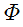
와 반대 방향, 같은 속도로 회전시킬 때 브러시 간 전압(Ec)의 주파수는? (단, ns[rps] : 회전 자계의 속도)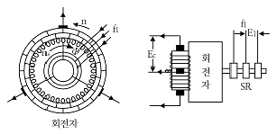
- f1
- 1
- 0
- nsf1
(정답률: 40%)
43. 직류기의 전기자 권선에 있어서 m중 중권일 때 내부 병렬 회로수 a는? (단, a : 내부 병렬 회로수, p : 극수이다.)
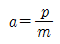
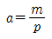
- a=mp
- a=p-m
(정답률: 47%)
44. MOSFET에 대한 설명으로 옳은 것은?
- ON 상태에서는 높은 저항처럼 동작한다.
- BJT와 비교하여 게이트와 소스간의 입력 임피던스가 매우 작다.
- 소수 캐리어 소자이므로 BJT에 비해 턴온과 턴오프가 늦게 이루어진다.
- 게이트-소스간의 전압으로 드레인 전류를 제어하는 전압제어 스위치로 동작한다.
(정답률: 49%)
45. 변압기의 철손이 전부하 동손보다 크게 설계되었다면 이 변압기의 최대효율은 어떤 부하에서 생기는가?
- 1/2부하
- 3/4부하
- 전부하
- 과부하
(정답률: 39%)
46. 정전압 계통에 접속된 동기 발전기의 여자를 약하게 하면?
- 출력이 감소한다.
- 전압이 강하한다.
- 지상 무효전류가 증가한다.
- 진상 무효전류가 증가한다.
(정답률: 33%)
47. 입력된 직류 전력의 크기를 변환된 다른 직류 전력으로 출력하는 전력변환 장치는?
- 초퍼
- 인버터
- 사이클로 컽버터
- 다이오드 정류기
(정답률: 56%)
48. 단락사고에 대한 전동기의 과전류 보호기기가 아닌 것은?
- PF
- MC
- OCR
- MCCB
(정답률: 43%)
49. 동기 발전기에서 고조파분을 제거하여 기전력의 파형을 개선하는 권선법은?
- 전절권
- 집중권
- 장절권
- 단절권
(정답률: 51%)
50. 5[kVA], 2000/200[V]의 단상 변압기가 있다. 2차에 환산한 등가 저항 0.15[Ω]과 등가 리액턴스는 0.17[Ω]이다. 이 변압기에 역률 0.8(뒤짐)의 정격 부하를 연결할 때의 전압 변동률은 약 몇 [%]인가?
- 2.8
- 3.0
- 3.2
- 3.4
(정답률: 24%)
51. 무부하에서 자기 여자에 의한 전압을 확립하지 못하는 특성을 가진 발전기는?
- 직권 발전기
- 분권 발전기
- 가동복권 발전기
- 차동복권 발전기
(정답률: 39%)
52. 3상 유도전동기의 기동법 중 전전압 기동에 대한 설명으로 틀린 것은?
- 기동 시에는 역률이 좋지 않다.
- 전동기 단자에 직접 정격전압을 가한다.
- 소용량의 농형 전동기에서는 일반적으로 기동시간이 길다.
- 소용량 농형 전동기에서 보편적으로 사용되는 기동법이다.
(정답률: 35%)
53. 직류 전동기를 전 부하 전류 이하에서 동일 전류로 운전할 경우 회전수가 큰 순서대로 나열하면?
- 직권 > 차동 복권 > 분권 > 화동(가동) 복권
- 차동 복권 > 분권 > 화동(가동) 복권 > 직권
- 직권 > 화동(가동) 복권 > 분권 > 차동 복권
- 화동(가동) 복권 > 분권 > 차동 복권 > 직권
(정답률: 47%)
54. 장거리 고압 송전선이나 케이블 송전선을 무부하에서 충전하는 동기 발전기의 자기여자 현상 방지법으로 틀린 것은?
- 수전단에 변압기를 병렬로 접속한다.
- 발전기에 콘덴서를 병렬로 접속한다.
- 수전단에 리액턴스를 병렬로 접속한다.
- 발전기 여러대를 모선에 병렬로 접속한다.
(정답률: 29%)
55. 그림은 복권 발전기의 외부특성곡선이다. 이중 과복권을 나타내는 곡선은?
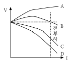
- A
- B
- C
- D
(정답률: 51%)
56. 권선비 20의 10[kVA] 변압기가 있다. 1차 저항이 3[Ω]이라면 2차로 환산한 저항은 약 몇[Ω]인가?
- 0.0038
- 0.0075
- 0.38
- 0.749
(정답률: 44%)
57. 유도 전동기가 정방향으로 토크가 발생하고, 슬립이 1 이상에서 동작하는 경우는?
- 감자 작용
- 회생 제동
- 역상 제동
- 게르게스
(정답률: 28%)
58. 2차 여자에 의한 권선형 3상 유도전동기의 속도제어에서 2차 유기전압과 반대방향으로 슬립 주파수 전압 Ec를 크게하면 속도는?
- 속도가 증가한다.
- 속도가 감소한다.
- 속도의 변화는 없다.
- 속도는 증가하나 역률이 떨어진다.
(정답률: 40%)
59. 3상 동기발전기의 전기자 권선을 Y 결선으로 하는 이유 중 △결선과 비교할 때 장점이 아닌 것은?
- 권선의 코로나 현상이 적다.
- 출력을 더욱 증대할 수 있다.
- 고조파 순환전류가 흐르지 않는다.
- 권선의 보호 및 이상전압의 방지 대책이 용이하다.
(정답률: 31%)
60. 8극, 50[kW], 3300[V], 60[Hz], 3상 유도전동기의 전부하 슬립이 4[%]라고 한다. 이 슬립링 사이에 0.16[Ω]의 저항 3개를 Y로 삽입하면 전부하 토크를 발생할 때의 회전수 [rpm]는? (단, 2차 각상의 저항은 0.04[Ω]이고, Y접속이다.)
- 660
- 720
- 750
- 880
(정답률: 31%)
4과목: 회로이론
61. 다음 두 회로의 4단자 정수가 동일할 조건은?
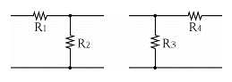
- R1=R2, R3=R4
- R1=R3, R2=R4
- R1=R4, R2=R3=0
- R2=R3, R1=R4=0
(정답률: 34%)
62. 그림과 같은 회로에서 인가 전압에 의한 전류 i를 입력, V0를 출력이라 할 때 전달함수는? (단, 초기 조건은 모두 0이다.)
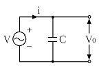
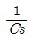
- Cs
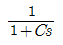
- 1+Cs
(정답률: 40%)
63. RLC 직렬회로에서 L=0.1×10-3[H], R=100[Ω], C=0.1×10-6[F]일 때, 이 회로는?
- 진동적이다.
- 비진동적이다.
- 정현파로 진동한다.
- 진동과 비진동을 반복한다.
(정답률: 41%)
64. 저항(R)과 유도 리액턴스(XL)의 직렬 회로에 E=14+j38인 교류 전압을 가하니 I=6+j2[A]의 전류가 흐른다. 이 회로의 저항(R)과 유도 리액턴스(XL)는?
- R=4[Ω], XL=5[Ω]
- R=5[Ω], XL=4[Ω]
- R=6[Ω], XL=3[Ω]
- R=7[Ω], XL=2[Ω]
(정답률: 42%)
65. 어느 회로의 전압과 전류가 각각 e=50sin(wt+θ)[V], i=4sin(wt+θ-30°)[A]일 때, 무효전력은?
- 100
- 86.6
- 70.7
- 50
(정답률: 26%)
66. 3상 평형회로에서 선간전압 200[V], 각 상의 부하 임피던스가 24+j7[Ω]인 Y결선의 3상 유효전력[W]은?
- 192
- 512
- 1536
- 4608
(정답률: 39%)
67. 그림에서 V1=10[V], v2=20√2coswt[V], w=200[rad/s] 일 때 전류의 순시값[A]은?
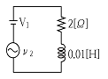
- 10
- 12.07
- 5+10sin(wt+45°)
- 5+5√2cos(wt+30°
(정답률: 34%)
68. f(t)=1의 라플라스 변환은?
- 1
- s
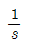
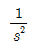
(정답률: 45%)
69. 공급전압이 10[V]이며 회로에 흐르는 전류가 10[A]일 때, 이 회로의 유효전력이 50[W]라면 전압과 전류의 위상차는?
- 0°
- 30°
- 45°
- 60°
(정답률: 33%)
70. 4단자 정수 A, B, C, D의 관계로 옳은 것은?
- AC+BD=1
- AB-CD=1
- AB+CD=1
- AD-BC=1
(정답률: 56%)
71. 다음과 같은 파형의 맥동전류를 열선형 계기로 측정한 결과 10[A]이었다. 이를 가동 코일형 계기로 측정할 때 전류의 값[A]은?
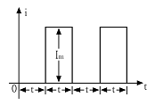
- 7.07
- 10
- 14.14
- 17.32
(정답률: 34%)
72. 과도 현상에 관한 내용 중 틀린 것은?
- RL 직렬회로의 시정수는 L/R초이다.
- RC 직렬회로에서 V0로 충전된 콘덴서를 방전시킬 경우 t=RC에서의 콘덴서 단자전압은 0.632V0이다.
- 정현파 교류회로에서는 전원을 넣을 때의 위상을 조절함으로써 과도현상의 영향을 제거할 수 있다.
- 전원이 직류 기전력인 때에도 회로의 전류가 정현파로 되는 경우가 있다.
(정답률: 30%)
73. 그림의 회로에서 a-b 사이의 전압 Eab[V]는?
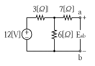
- 6
- 8
- 10
- 12
(정답률: 45%)
74.
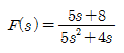
일 때 f(t)의 최종값은?- 1
- 2
- 3
- 4
(정답률: 52%)
75. 전압 200[V], 전류 30[A]로서 4.3[kW]의 전력을 소비하는 회로의 리액턴스는 약 몇[Ω]인가?
- 3.35
- 4.65
- 5.35
- 6.65
(정답률: 35%)
76. 전류의 대칭분을 I0, I1, I2 유기기전력 및 단자 전압의 대칭분을 Ea, Eb, Ec 및 V0, V1, V2라 할 때 교류 발전기의 기본식 중 역상분 V2의 값은? (단, 임피던스의 대칭분은 Z0, Z1, Z2라 한다.)
- -Z0I0
- -Z2I2
- Ea-Z1I1
- Eb-Z2I2
(정답률: 32%)
77. 그림과 같이 대칭 3상 교류발전기의 a상이 임피던스 Z를 통하여 지락 되었을 때 흐르는 지락전류 Ig는?
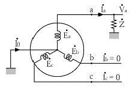
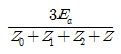
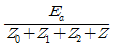
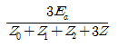
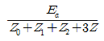
(정답률: 37%)
78. 그림과 같은 회로에서 L1[H] 양단의 전압 v1[V]은? (단, 상호 인덕턴스는 무시한다.)
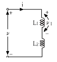
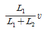
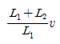
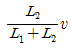
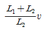
(정답률: 44%)
79. 선형 회로망 소자가 아닌 것은?
- 저항기
- 콘덴서
- 철심이 있는 코일
- 철심이 없는 코일
(정답률: 29%)
80. 평형 3상 부하에 전력을 공급할 때 선전류가 20[A]이고 부하의 소비전력이 4[kW]이다. 이 부하의 등가 Y회로에 대한 각 상의 저항은 약 몇 [Ω]인가?
- 3.3
- 5.7
- 7.2
- 10
(정답률: 30%)
5과목: 전기설비
81. 가공전선로의 지지물에 시설하는 지선의 시설기준에 대한 설명 중 옳은 것은?
- 지선의 안전율은 2.5 이상일 것
- 연선을 사용하는 경우 소선 4가닥 이상의 연선일 것
- 지중 부분 및 지표상 100[cm] 까지의 부분은 철봉을 사용할 것.
- 도로를 횡단하여 시설하는 지선의 높이는 지표상 4[m] 이상으로 할 것
(정답률: 52%)
82. 특고압 가공전선로의 지지물 양측의 경간의 차가 큰 곳에 사용하는 철탑의 종류는?
- 내장형
- 보강형
- 직선형
- 인류형
(정답률: 59%)
83. 154[kV] 전선로를 제 1종 특고압 보안공사로 시설할 때 경동연선의 굵기는 몇 [mm2]이상이어야 하는가?
- 55
- 100
- 150
- 200
(정답률: 39%)
84. 고압 가공전선으로 경동선 또는 내열 동합금선을 사용할 경우에 이도의 최소 안전율은? (단, 빙설이 많지 않은 지방에서 그 지방의 평균 온도에서 전선의 중량과 그 전선의 수직 투영면적 1[m2]당 745[Pa]의 수평 풍압과의 합성하중을 지지하는 경우임)
- 2.2
- 2.5
- 2.7
- 3.0
(정답률: 33%)
85. 애자사용 공사에 의한 고압 옥내배선을 할 때 전선을 조영재의 면을 따라 붙이는 경우, 전선의 지지점간의 거리는 몇 [m] 이하이어야 하는가?
- 2
- 3
- 4
- 5
(정답률: 43%)
86. 전기 자동차 충전설비 시설에 대한 설명 중 틀린 것은?
- 과전류 차단기를 각 극에 설치한다.
- 충전장치와 전기 자동차의 접속에는 연장 코드를 사용한다.
- 전로의 지락이 생겼을 때 자동으로 그 전로를 차단하는 장치를 시설한다.
- 커플러의 접지극은 투입 시 먼저 접속되고 차단시 나중에 분리되는 구조로 한다.
(정답률: 32%)
87. 정격전류 30[A]인 과전류 차단기로 보호되는 저압옥내 배선의 최소 굵기는 몇 [mm2]인가? (단, 미네럴인슈레이션 케이블은 제외한다.)
- 2.5
- 4
- 6
- 10
(정답률: 20%)
88. 가요 전선관 공사에 의한 저압 옥내배선의 시설 방법으로 기술 기준에 적합한 것은?
- 옥외용 비닐절연전선을 사용하였다.
- 2종 금속제 가요전선관을 사용하였다.
- 가요전선관에 제1종 접지공사를 하였다.
- 전선은 연동선으로 단면적 16[mm2]의 단선을 사용하였다.
(정답률: 34%)
89. 고주파 이용 설비에서 다른 고주파 이용 설비에 누설되는 고주파 전류의 허용한도는 측정 장치 또는 이에 준하는 측정 장치로 2회 이상 연속하여 10분간 측정하였을 때에 각각 측정값의 최대값에 대한 평균값이 몇 [dB] 인가? (단, 1mW를 0[dB]로 한다.)
- 20
- -20
- -30
- 30
(정답률: 26%)
90. 특고압 지중전선이 가연성이나 유독성의 유체를 내포하는 관과 접근하기 때문에 상호간에 견고한 내화성의 격벽을 시설하였다. 상호간의 이격거리가 몇 [m] 이하인 경우인가? (단, 사용전압이 25[kV] 이하인 다중접지 방식 지중전선로는 제외한다.)
- 0.4
- 0.6
- 0.8
- 1.0
(정답률: 39%)
91. 옥내에 시설하는 사용전압이 400[V] 미만인 전구선으로 고무코드를 사용할 경우, 단면적이 몇 [mm2] 이상인 것을 사용하여야 하는가?
- 0.75
- 2
- 3.5
- 5.5
(정답률: 46%)
92. 농사용 저압 가공전선로의 경간은 몇 [m] 이하이어야 하는가?
- 30
- 50
- 60
- 100
(정답률: 45%)
93. 발전소에는 운전 보안상 각종의 계측 장치를 시설하여야 한다. 이때 계측 대상이 아닌 것은?
- 주요 변압기의 역률
- 발전기의 고정자 온도
- 특고압용 변압기의 온도
- 주요 변압기의 전압 및 전류 또는 전력
(정답률: 46%)
94. 특고압전로와 저압 전로를 결합하는 변압기의 저압측 중성점에 행하는 접지 공사는?
- 제 1종 접지공사
- 제 2종 접지공사
- 제 3종 접지공사
- 특별 제3종 접지공사
(정답률: 32%)
95. 화약류 저장소의 전기설비 시설에 있어서 틀린 것은?
- 전기기계 기구는 전폐형으로 시설한다.
- 케이블이 손상될 우려가 없도록 시설한다.
- 전용 개폐기 및 과전류 차단기는 화약류 저장소 안에 둔다.
- 과전류 차단기에서 저장소 입구까지의 배선에는 케이블을 사용한다.
(정답률: 56%)
96. 고압 가공인입선의 높이는 그 전선의 아래쪽에 위험표시를 하였을 경우에 지표상 몇[m] 까지로 감할 수 있는가?
- 2.5
- 3
- 3.5
- 4
(정답률: 36%)
97. 사용전압이 저압인 전로에서 정전이 어려운 경우 등 절연저항 측정이 곤란한 경우에 누설전류를 몇 [mA] 이하로 유지하여야 하는가?
- 0.5
- 1
- 2
- 3
(정답률: 41%)
98. 변전소에 울타리, 담 등을 시설할 때, 사용전압이 345[kV]이면 울타리, 담 등의 높이와 울타리, 담등으로부터 충전부분까지의 거리의 합계는 몇 [m] 이상으로 하여야 하는가?
- 6.48
- 8.16
- 8.40
- 8.28
(정답률: 52%)
99. 교류에서 고압의 범위는?(2021년 개정된 KEC 규정 적용됨)
- 1000[V]를 초과하고 7[kV] 이하인 것
- 750[V]를 초과하고 7[kV] 이하인 것
- 600[V]를 초과하고 7.5[kV] 이하인 것
- 750[V]를 초과하고 7.5[kV] 이하인 것
(정답률: 42%)
100. 변압기에 의하여 특고압 전로에 결합되는 고압 전로에는 사용전압의 몇 배 이하의 전압이 가하여진 경우에 방전장치를 시설하여야 하는가?
- 2
- 3
- 4
- 5
(정답률: 37%)